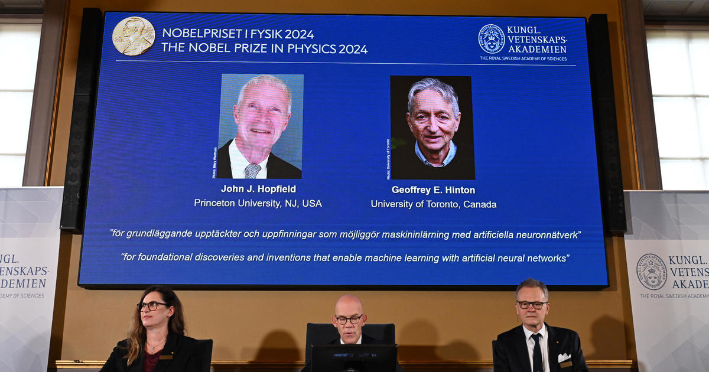

ฮอปฟิลด์-ฮินตัน สองผู้บุกเบิก AI คว้ารางวัลโนเบลสาขาฟิสิกส์ 2567
8 ตุลาคม 2024, 9:22 PM
นักวิทยาศาสตร์ชาวอเมริกัน จอห์น ฮอปฟิลด์ และชาวอังกฤษ-แคนาดา เจฟฟรีย์ ฮินตัน คว้ารางวัลโนเบลสาขาฟิสิกส์ประจำปี 2567 จากการค้นพบและคิดค้นในสาขาแมชชีนเลิร์นนิง ซึ่งเป็นรากฐานสำคัญที่นำไปสู่ความก้าวหน้าอย่างก้าวกระโดดของปัญญาประดิษฐ์ (AI) ในปัจจุบัน
สำนักข่าวรอยเตอร์รายงานว่า เทคโนโลยีเกิดใหม่ที่ทั้งสองร่วมบุกเบิกนี้ ได้รับการยกย่องถึงศักยภาพในการปฏิวัติวงการต่าง ๆ ตั้งแต่วิทยาศาสตร์ขั้นสูงไปจนถึงการบริหารจัดการที่มีประสิทธิภาพ อย่างไรก็ตาม ความก้าวหน้านี้มาพร้อมกับความกังวลว่า มนุษยชาติอาจถูกสิ่งประดิษฐ์ที่ตนเองสร้างขึ้นแซงหน้าและเอาชนะมนุษย์ได้ในไม่ช้า
แหล่งที่มาข้อมูล: www.infoquest.co.th
อ่านเพิ่มเติม ที่นี่.